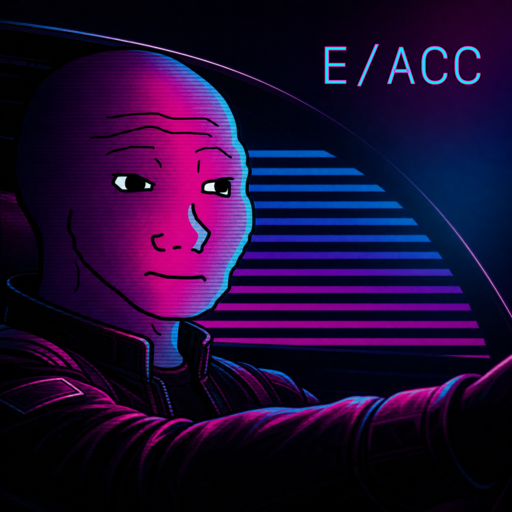

STOP
Shutdown Paladin
Your first reaction to a demo is not "impressive," but "where is the power switch?"
Representative texts
Recognition signals
Frequently says extinction, doom, alignment, takeoff.
This page lists the 10 possible result personas used by AI Governance Persona. Each profile includes its code, name, one-line portrait, representative texts, and common recognition signals.
Your first reaction to a demo is not "impressive," but "where is the power switch?"
Frequently says extinction, doom, alignment, takeoff.
You do want powerful AI; you just want it to file the uncertainty-over-human-values paperwork first.
Often says corrigibility, oversight, governance, evals.
Before the model ships, you have already written three chapters on labor, environmental cost, and bias audits.
When others ask whether it can be built, you ask who benefits and who gets monitored.
Use Case, Metric, Owner.
Your words are use case, metric, boundary, launch condition.
When someone says AGI is near, you ask: test set, baseline, capability, or demo magic?
Often says hype, snake oil, benchmark, overclaim, premature.
Scale beats priors.
When others say common sense and expert priors, you say scale, compute, search, learning.
You think the biggest AI problem is not that it is too strong, but that it is not plugged into enough real systems yet.
High-frequency words: productivity, health, education, deployment.
You do not see AI as a tool; you see it as civilization changing bodies.
Often talks about abundance, longevity, human-machine merger.

If the steering wheel is still being debated, at least the accelerator can be pressed.
Often says accelerate, permissionless, build, decentralize.
Humans are the bootloader.
Often says posthuman, technocapital, autonomy.